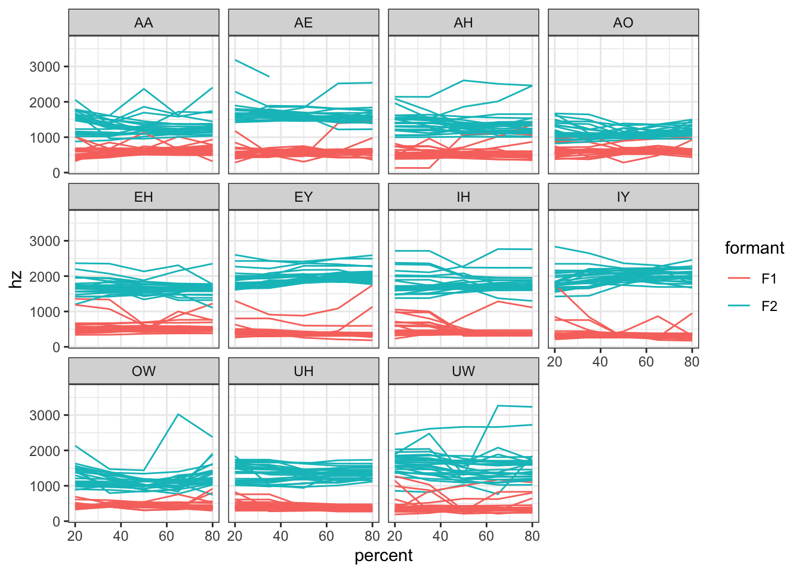

update.packages("tidyr")Vowel trajectory data can be tricky to work with in R. Sometimes I need to reshape my data into specific format to make a particular type of visual, run some test, or calculate some number. And it can be frustrating. While it has always been possible to accomplish this task in R, with the pivot_longer function from latest version of tidyr, all this reshaping can be done in a single line of code! This post shows you how.
Introduction
To be clear, I understand the frustration that comes when trying to reshape your data. Here’s an actual tweet I posted a few years ago after several hours of wrangling.
In any given project, I think I spend more time trying to figure out how to reshape, melt, and cast my data than anything else.
— Joey Stanley (@joey_stan) November 17, 2016
Some of you may be able to deduce that I was working with Hadley Wickham’s reshape2 package, which had the functions melt and cast. In fact, I was so frustrated that I ended up hacking a solution in a Praat script(!) since I couldn’t figure out how do it in R. Fortunately for me, Wickham later released the tidyr package, sort of meant to replace reshape2, and included the functions gather and spread. With the help of the relevant section of R for Data Science I was able to learn to use these functions well and now I use them all the time.
Well, tidyr has grown up and is now on version 1.0. Some people (not me though) didn’t find the names or syntax of gather and spread intuitive enough, so they were renamed pivot_longer and pivot_wider. But it was more than just a cosmetic change: these functions got some major modifications to make them far more powerful than they were before.
Vowel trajectory data is complicated because we’ve got multiple formant measurements at multiple timepoints. You may also have multiple versions of the measurements, like normalized or transformed into Barks. If you’re working with this kind of data, you need to be comfortable with any sort of reshaping you need so that you can quickly and effectively do what you need to do with your data.
Note that much of this blog post overlaps with my post on visualizing trajectory data. That tutorial uses the old gather and spread functions. This post shows how to accomplish the same thing with the new pivot_longer function.
Prep the data
First, we’ll need to make sure we’ve got the latest version of tidyr.
I’ll now load it, together with the rest of the tidyverse:
library(tidyverse)Let’s start with a regular dataset. This is one that I’ve used in lots of my other blog posts. I sat at my kitchen table and read about 300 sentences. The audio was processed using DARLA’s fully automated option: it was automatically transcribed, then force-aligned with ProsodyLab (DARLA used ProsodyLab instead of the MFA back then), and then formants were automatically extracted using FAVE. Not the cleanest method, but it’s good enough for this post. My guess is that if you’ve used FAVE before, the output will look very similar to your own data.
Note that I’m using the
read_csv function instead of read.csv. The one with the underscore will preserve the original column names, like F1@20%, even if it’s hard to work with them down the road. Meanwhile read.csv will replace troublesome characters with periods, so that F1@20% becomes F1.20.. I’ll use the underscore version in this post, which has ramifications for code later on. If things crash for you, check to see that you read your data in with read_csv.joey_raw <- read_csv("http://joeystanley.com/data/joey.csv",
show_col_types = FALSE) %>%
print()# A tibble: 3,504 × 43
name sex vowel stress pre_word word fol_word F1 F2 F3
<chr> <chr> <chr> <dbl> <chr> <chr> <chr> <dbl> <dbl> <chr>
1 LA000-Joey M AY 1 THE THAI SP 826 1520. 2529.5
2 LA000-Joey M AY 1 SP TIMER SP 581. 1306 1835.6
3 LA000-Joey M ER 0 SP TIMER SP 484. 1449. 1644.6
4 LA000-Joey M IY 1 SP HERE WE'LL 235. 2044. 3106.3
5 LA000-Joey M IY 1 HERE WE'LL SP 302. 1974. 2549.5
6 LA000-Joey M AA 1 SP BARRING INJURY 573. 925. 2296.1
7 LA000-Joey M IH 1 BARRING INJURY OR 362. 2262. 2591.2
8 LA000-Joey M IY 0 BARRING INJURY OR 258. 2222. 3197.5
9 LA000-Joey M ER 0 INJURY OR A 370. 872. 1654.5
10 LA000-Joey M EY 1 A CHANGE OF 428. 2210. 2531.2
# ℹ 3,494 more rows
# ℹ 33 more variables: F1_LobanovNormed_unscaled <dbl>,
# F2_LobanovNormed_unscaled <dbl>, B1 <dbl>, B2 <dbl>, B3 <chr>, t <dbl>,
# beg <dbl>, end <dbl>, dur <dbl>, plt_vclass <chr>, plt_manner <chr>,
# plt_place <chr>, plt_voice <chr>, plt_preseg <chr>, plt_folseq <chr>,
# pre_seg <chr>, fol_seg <chr>, context <chr>, vowel_index <dbl>,
# pre_word_trans <chr>, word_trans <chr>, fol_word_trans <chr>, …For now, I’m going to make the dataset smaller so it’s easier to work with:
First, I’ll use
filterto exclude some stuff out based on linguistic criteria: only stressed vowels, all vowels except diphthongs and /ɚ/, and vowels that are not followed by a sonorant.Then I’ll use
selectto keep just the columns I need in this tutorial. Today, I’ll just need the columns containing information about the vowel, the word, the time, and all the formant measurements. As a shorthand, I use the functioncontainsand then the string"@"to get all the columns that contain the @ symbol. Thiscontainsshortcut saves a lot of typing and ensures I don’t miss any.Then, because I don’t want an overly large dataset, I’ll just keep the first 25 tokens of each vowel. First, I use
group_byto group the data by vowel, then I usetop_nto keep the top 25 vowels, with thetcolumn specified to make sure that they’re the first 25 based on time. Then since I’m done grouping them, I’ll useungroup.
The final result is a dataframe with 275 rows and 13 columns. Much more manageable than the 3504 rows and 43 columns I had before.
joey <- joey_raw %>%
filter(stress == 1,
!vowel %in% c("AY", "AW", "OY", "ER"),
!fol_seg %in% c("R", "L", "M", "N", "NG", "Y", "W")) %>%
select(vowel, word, t, contains("@")) %>%
group_by(vowel) %>%
top_n(25, t) %>%
ungroup() %>%
print()# A tibble: 275 × 13
vowel word t `F1@20%` `F2@20%` `F1@35%` `F2@35%` `F1@50%` `F2@50%`
<chr> <chr> <dbl> <dbl> <dbl> <dbl> <dbl> <dbl> <dbl>
1 AO CROSSING 623. 379. 942. 426 950. 534. 978.
2 AO WASHINGTON 703. 609. 937. 612. 940 630. 996.
3 AO COST 738. 871. 1398. 862. 1371. 637. 1040.
4 AO FROST 771. 564. 1034. 621. 1046. 283. 1016
5 UH LOOKED 885. 439. 1074. 436. 1082. 380. 1210.
6 AH COUPLE 891. 405. 1316. 405. 1316. 492. 1236.
7 AH OTHER 899. 402. 1298 407. 1281. 481. 1103.
8 AO CROSS 904. 630. 1094 611. 1106 595. 1124
9 UH GOOD 908. 388. 1525. 362. 1518. 376. 1466.
10 AH OTHER 910. 466. 2088. 960. 1743. 475. 1340.
# ℹ 265 more rows
# ℹ 4 more variables: `F1@65%` <dbl>, `F2@65%` <dbl>, `F1@80%` <dbl>,
# `F2@80%` <dbl>One row per token: F1-F2 single-point plots
Let’s pause for a second and think about how our data is structured. We have 275 rows in our spreadsheet. What does each row represent? A single vowel token. We have 10 formant measurements per token, each in its own column.
What is this type of data good for? Well, it’s perfect for if you want to make F1-F2 plots and you only want to point a single point per token.
Here’s a simple plot with this data. I’ll only plot the midpoints. There are some outliers—probably bad measurements—but that’s the nature of automatically processed data. In a later blog post, I’ll show some ways to filter those out.
Notice that I’ve got the little tick marks (`) around
F2@50% and F1@50%. Since the @ and % symbols are hard to work with in R, you have to use the ticks when referring to a column name that includes them.ggplot(joey, aes(`F2@50%`, `F1@50%`, color = vowel)) +
geom_point() +
stat_ellipse(level = 0.67) +
scale_x_reverse() + scale_y_reverse() +
theme_bw()
So, if all you need to do is make that kind of plot, then you’re golden and you don’t need to reshape the data at all. The downside is that if you want to work with trajectories, you can’t really visualize them very well.
One row per measurement: Spectrogram-like plots
As it turns out, you can store the exact same data using very different structures. The previous section looked at plots when the data was in a one-token-per-row format. It had 275 rows and 13 columns. We can reshape this data so that each individual formant measurement gets is own row. Basically, we’re collapsing all those F1@20%, F2@20% columns down into one. Here’s what that looks like:
## # A tibble: 2,750 x 5
## vowel word t formant_percent hz
## <chr> <chr> <dbl> <chr> <dbl>
## 1 AO CROSSING 623. F1@20% 379.
## 2 AO CROSSING 623. F2@20% 942.
## 3 AO CROSSING 623. F1@35% 426
## 4 AO CROSSING 623. F2@35% 950.
## 5 AO CROSSING 623. F1@50% 534.
## 6 AO CROSSING 623. F2@50% 978.
## 7 AO CROSSING 623. F1@65% 548.
## 8 AO CROSSING 623. F2@65% 1018.
## 9 AO CROSSING 623. F1@80% 534.
## 10 AO CROSSING 623. F2@80% 1037.
## # … with 2,740 more rowsNotice that a new column, formant_percent contains the column names F1@20%, F2@20%, etc. In corresponding rows, we have the actual formant measurement in the hz column. This is the exact same data, only now we have 2,750 rows of just 5 columns.
So how do we do this transformation—and can we clean it up a little bit better?
In a previous tutorial, I show how to accomplish this task using tidyr::gather.
joey %>%
gather(formant_percent, hz, contains("@"))# A tibble: 2,750 × 5
vowel word t formant_percent hz
<chr> <chr> <dbl> <chr> <dbl>
1 AO CROSSING 623. F1@20% 379.
2 AO WASHINGTON 703. F1@20% 609.
3 AO COST 738. F1@20% 871.
4 AO FROST 771. F1@20% 564.
5 UH LOOKED 885. F1@20% 439.
6 AH COUPLE 891. F1@20% 405.
7 AH OTHER 899. F1@20% 402.
8 AO CROSS 904. F1@20% 630.
9 UH GOOD 908. F1@20% 388.
10 AH OTHER 910. F1@20% 466.
# ℹ 2,740 more rowsThis method is not obsolete per se, but the gather function is considered “retired” because a new and improved function, pivot_longer, can get the job done better. It is recommended that new code use pivot_longer instead of gather now. If you’d like to learn more about pivot_longer, check out the vignette on pivoting. I’ll just go over some of the most relevant details here.
So, if you’re like me and are very used to gather, you can mimic its syntax pretty well with pivot_longer.
joey %>%
pivot_longer(contains("@"),
names_to = "formant_percent",
values_to = "hz")# A tibble: 2,750 × 5
vowel word t formant_percent hz
<chr> <chr> <dbl> <chr> <dbl>
1 AO CROSSING 623. F1@20% 379.
2 AO CROSSING 623. F2@20% 942.
3 AO CROSSING 623. F1@35% 426
4 AO CROSSING 623. F2@35% 950.
5 AO CROSSING 623. F1@50% 534.
6 AO CROSSING 623. F2@50% 978.
7 AO CROSSING 623. F1@65% 548.
8 AO CROSSING 623. F2@65% 1018.
9 AO CROSSING 623. F1@80% 534.
10 AO CROSSING 623. F2@80% 1037.
# ℹ 2,740 more rowsBut it turns out that pivot_longer has some pretty awesome additional functionality that gather didn’t have!
First off, we shouldn’t be satisfied with the formant_percent column. It’s a single column containing two pieces of information: what formant the measurement is, and how far into the vowel’s duration it came from. If you want, you can easily split the two up using separate.
separate has actually now been replaced by separate_wider_position and separate_wider_delim.joey %>%
pivot_longer(contains("@"),
names_to = "formant_percent",
values_to = "hz")%>%
separate(formant_percent,
c("formant", "percent"),
extra = "drop")# A tibble: 2,750 × 6
vowel word t formant percent hz
<chr> <chr> <dbl> <chr> <chr> <dbl>
1 AO CROSSING 623. F1 20 379.
2 AO CROSSING 623. F2 20 942.
3 AO CROSSING 623. F1 35 426
4 AO CROSSING 623. F2 35 950.
5 AO CROSSING 623. F1 50 534.
6 AO CROSSING 623. F2 50 978.
7 AO CROSSING 623. F1 65 548.
8 AO CROSSING 623. F2 65 1018.
9 AO CROSSING 623. F1 80 534.
10 AO CROSSING 623. F2 80 1037.
# ℹ 2,740 more rowsHowever, you can now incorporate that separation into the pivot_longer itself! One potential way to do it is by using the names_sep argument. You provide the string that separates the eventual column names and it’ll take care of splitting it up.
joey %>%
pivot_longer(contains("@"),
names_to = c("formant", "percent"),
names_sep = "@",
values_to = "hz")# A tibble: 2,750 × 6
vowel word t formant percent hz
<chr> <chr> <dbl> <chr> <chr> <dbl>
1 AO CROSSING 623. F1 20% 379.
2 AO CROSSING 623. F2 20% 942.
3 AO CROSSING 623. F1 35% 426
4 AO CROSSING 623. F2 35% 950.
5 AO CROSSING 623. F1 50% 534.
6 AO CROSSING 623. F2 50% 978.
7 AO CROSSING 623. F1 65% 548.
8 AO CROSSING 623. F2 65% 1018.
9 AO CROSSING 623. F1 80% 534.
10 AO CROSSING 623. F2 80% 1037.
# ℹ 2,740 more rowsBut this is a little problematic because the values in percent column still have the “%” symbol attached. With separate we could just toss it with extra = "drop" but it doesn’t look so easy with pivot_longer.
Fortunately, pivot_longer has a more sophisticated way to separate columns. Instead of names_sep, we can use names_pattern. Here, we use what’s called a regular expression to capture the necessary groups within the old column names. So, if we think about all our column names F1@20%, F2@20%, F1@35%, etc. we can see that the “template” is “F#@##%”—that is, an F followed by a number, then the @ symbol, two numbers, and then the % symbol. So, knowing that \\d is the regular expression for a digit, we can use the search pattern "(F\\d)@(\\d\\d)%" to represent our column names. The crucial part here is that we have the information we want to keep, F\\d and \\d\\d, in parentheses. pivot_longer will then use those captured groups as new column names.
joey %>%
pivot_longer(cols = contains("@"),
names_to = c("formant", "percent"),
names_pattern = "(F\\d)@(\\d\\d)%",
values_to = "hz")# A tibble: 2,750 × 6
vowel word t formant percent hz
<chr> <chr> <dbl> <chr> <chr> <dbl>
1 AO CROSSING 623. F1 20 379.
2 AO CROSSING 623. F2 20 942.
3 AO CROSSING 623. F1 35 426
4 AO CROSSING 623. F2 35 950.
5 AO CROSSING 623. F1 50 534.
6 AO CROSSING 623. F2 50 978.
7 AO CROSSING 623. F1 65 548.
8 AO CROSSING 623. F2 65 1018.
9 AO CROSSING 623. F1 80 534.
10 AO CROSSING 623. F2 80 1037.
# ℹ 2,740 more rowsAnd like magic, the 10 columns in the old dataset are turned into tidy formant and percent columns.
There’s one more thing that can be done, if you’d like. By default, pivot_longer will make these new columns into character vectors. In our case, we may want to turn them into factors and numeric vectors.
We can specify this with the names_ptypes argument. As its value, we provide a list of the column names and then how they should be encoded. For formant, I’m turning it into a factor, making sure to specify that the order of the levels goes “F1” first and then “F2”. For the percent column, R doens’t like going directly from a character type to a numeric, so you’ll have to do this more directly using names_transform rather than names_ptypes.
joey %>%
pivot_longer(cols = contains("@"),
names_to = c("formant", "percent"),
names_pattern = "(F\\d)@(\\d\\d)%",
names_ptypes = list(formant = factor(levels = c("F1", "F2"))),
names_transform = list(percent = as.numeric),
values_to = "hz")# A tibble: 2,750 × 6
vowel word t formant percent hz
<chr> <chr> <dbl> <fct> <dbl> <dbl>
1 AO CROSSING 623. F1 20 379.
2 AO CROSSING 623. F2 20 942.
3 AO CROSSING 623. F1 35 426
4 AO CROSSING 623. F2 35 950.
5 AO CROSSING 623. F1 50 534.
6 AO CROSSING 623. F2 50 978.
7 AO CROSSING 623. F1 65 548.
8 AO CROSSING 623. F2 65 1018.
9 AO CROSSING 623. F1 80 534.
10 AO CROSSING 623. F2 80 1037.
# ℹ 2,740 more rowsWhen these are all incorporated into pivot_longer, we get a single function call that takes care of everything. Before, I had to do gather, then separate, and then mutate to change the column types. So this is a lot handier.
The reason you might want to do all this is because this format is ideal if you want to to a spectrogram-like plot. Here’s what would happen if you tried one right now:
joey %>%
pivot_longer(cols = contains("@"),
names_to = c("formant", "percent"),
names_pattern = "(F\\d)@(\\d\\d)%",
names_ptypes = list(formant = factor(levels = c("F1", "F2"))),
names_transform = list(percent = as.numeric),
values_to = "hz") %>%
ggplot(aes(percent, hz, color = formant, group = t)) +
geom_path() +
theme_bw()Unfortunately, we need to do a little more data processing. The key is what ggplot uses as the group variable. We some column that will contain a unique value per line. Right now, we’re close: we have a unique value (t) for each vowel token. But there are 10 rows per vowel token, corresponding to the five measurements for F1 and F2. We need to create a new column that will uniquely identify each formant for each vowel token.
The simplest way I know is to just use the unite function. It simply combines two columns into one by concatenating the values together. We have the two columns we need, t and formant, so I’ll combine them to create traj_id. I’ll also add remove = FALSE because I want to keep the original ones (so that I can color the lines by formant). When I set this traj_id as the group variable, it works just as expected.
joey %>%
pivot_longer(cols = contains("@"),
names_to = c("formant", "percent"),
names_pattern = "(F\\d)@(\\d\\d)%",
names_ptypes = list(formant = factor(levels = c("F1", "F2"))),
names_transform = list(percent = as.numeric),
values_to = "hz") %>%
unite(traj_id, t, formant, remove = FALSE) %>%
ggplot(aes(percent, hz, color = formant, group = traj_id)) +
geom_path() +
theme_bw()Two comments on this. First, if you have more than one recording, you’ll want to use a different variable than t to uniquely identify tokens. After all, it’s possible that two tokens from two different recordings will have the exact same time measurement. One solution is to combine three variables (speaker, time, and formant), which will work just fine. I like to just create a new column to give each token a unique id. I’ll do that with rowid_to_column and call the new column id, which I’ll do before pivot_longer since the data is still in the one-token-per-row format. I’ll then create traj_id with id and formant.
Also, I’ll go ahead and facet the plot by vowel so you can see the individual vowel curves.
joey %>%
rowid_to_column("id") %>% # <- this is the new line
pivot_longer(cols = contains("@"),
names_to = c("formant", "percent"),
names_pattern = "(F\\d)@(\\d\\d)%",
names_ptypes = list(formant = factor(levels = c("F1", "F2"))),
names_transform = list(percent = as.numeric),
values_to = "hz") %>%
unite(traj_id, id, formant, remove = FALSE) %>%
ggplot(aes(percent, hz, color = formant, group = traj_id)) +
geom_path() +
facet_wrap(~vowel) +
theme_bw()
So, if you’re interested in plotting vowel trajectories this way, then you’ll need to reshape the data a bit to get it to work. The downside is that if you want to plot these in the F1-F2 space, you’ll have to do yet another technique.
One row per timepoint: Trajectories in the vowel space
The last main way that you may need to reshape your data is similar to the one-row-per-measurement, except we want F1 and F2 pairs to be on the same row. I’m calling this one the one-row-per-timepoint. Here’s what this format looks like. It’s very similar except F1 ad F2 are spread out into two different columns.
## # A tibble: 1,375 x 6
## vowel word t percent F1 F2
## <chr> <chr> <dbl> <int> <dbl> <dbl>
## 1 AO CROSSING 623. 20 379. 942.
## 2 AO CROSSING 623. 35 426 950.
## 3 AO CROSSING 623. 50 534. 978.
## 4 AO CROSSING 623. 65 548. 1018.
## 5 AO CROSSING 623. 80 534. 1037.
## 6 AO WASHINGTON 703. 20 609. 937.
## 7 AO WASHINGTON 703. 35 612. 940
## 8 AO WASHINGTON 703. 50 630. 996.
## 9 AO WASHINGTON 703. 65 627. 1074.
## 10 AO WASHINGTON 703. 80 612. 1080.
## # … with 1,365 more rowsIn a previous tutorial, I show how to accomplish this task using gather, then separate, and then spread all in a row. It was a whole ordeal.
joey %>%
gather("formant_percent", "hz", starts_with("F")) %>%
separate(formant_percent, into = c("formant", "percent"), extra = "drop") %>%
spread(formant, hz)# A tibble: 1,375 × 6
vowel word t percent F1 F2
<chr> <chr> <dbl> <chr> <dbl> <dbl>
1 AA ADOPTED 1622. 20 498 1621.
2 AA ADOPTED 1622. 35 609. 1382.
3 AA ADOPTED 1622. 50 658. 1184.
4 AA ADOPTED 1622. 65 683. 1160.
5 AA ADOPTED 1622. 80 554. 1237.
6 AA BODY 1785. 20 430. 1149.
7 AA BODY 1785. 35 585. 1054.
8 AA BODY 1785. 50 683. 1103.
9 AA BODY 1785. 65 632. 1169.
10 AA BODY 1785. 80 597. 1253.
# ℹ 1,365 more rowsIt worked, but three functions was cumbersome and complicated. I even put a note in that tutorial saying it took me forever to figure out how to do that. I had to do it so often that I even wrote a custom function to accomplish it and just had it at the top of all my scripts.
Using the new pivot_longer function, here’s one way that closely approximates my old code. I use the same pivot_longer to make it in the one-measurement-per-row format we had before and then I use the inverse function, pivot_wider, to spread it back out a little bit.
joey %>%
pivot_longer(cols = contains("@"),
names_to = c("formant", "percent"),
names_pattern = "(F\\d)@(\\d\\d)%",
names_ptypes = list(formant = factor(levels = c("F1", "F2"))),
names_transform = list(percent = as.numeric),
values_to = "hz") %>%
pivot_wider(names_from = formant, values_from = hz)# A tibble: 1,375 × 6
vowel word t percent F1 F2
<chr> <chr> <dbl> <dbl> <dbl> <dbl>
1 AO CROSSING 623. 20 379. 942.
2 AO CROSSING 623. 35 426 950.
3 AO CROSSING 623. 50 534. 978.
4 AO CROSSING 623. 65 548. 1018.
5 AO CROSSING 623. 80 534. 1037.
6 AO WASHINGTON 703. 20 609. 937.
7 AO WASHINGTON 703. 35 612. 940
8 AO WASHINGTON 703. 50 630. 996.
9 AO WASHINGTON 703. 65 627. 1074.
10 AO WASHINGTON 703. 80 612. 1080.
# ℹ 1,365 more rowsBelieve it or not though, pivot_longer can accomplish this in just one function call now. It’s incredible. If you look at the code in the pivot vignette, specifically in the section called “Multiple observations per row”, you’ll see an example using a dataset called anscombe. This is structurally very similar to our original data frame.
The way you pull this off I swear is black magic. In the names_to argument, instead of "formant", if you just type the keyword ".value" (with the period), it will somehow know to spread F1 and F2 into separate columns. Try it!
joey %>%
pivot_longer(cols = contains("@"),
names_to = c(".value", "percent"),
names_pattern = "(F\\d)@(\\d\\d)%",
names_transform = list(percent = as.numeric))# A tibble: 1,375 × 6
vowel word t percent F1 F2
<chr> <chr> <dbl> <dbl> <dbl> <dbl>
1 AO CROSSING 623. 20 379. 942.
2 AO CROSSING 623. 35 426 950.
3 AO CROSSING 623. 50 534. 978.
4 AO CROSSING 623. 65 548. 1018.
5 AO CROSSING 623. 80 534. 1037.
6 AO WASHINGTON 703. 20 609. 937.
7 AO WASHINGTON 703. 35 612. 940
8 AO WASHINGTON 703. 50 630. 996.
9 AO WASHINGTON 703. 65 627. 1074.
10 AO WASHINGTON 703. 80 612. 1080.
# ℹ 1,365 more rows I’m still trying to wrap my head around it, but it works beautifully. Of course now that there’s no intermediate step of the hz column, I don’t need the values_to = "hz" argument, and I don’t need to include the names_ptype list anymore either.
Try swapping “percent” for “.value” instead and see what it does.
I guess the question then is why we would want to do this in the first place. The main reason is because you may want to create trajectory plots in the F1-F2 space. This data is now perfectly suited for that kind of plot.
joey %>%
pivot_longer(cols = contains("@"),
names_to = c(".value", "percent"),
names_pattern = "(F\\d)@(\\d\\d)%",
names_transform = list(percent = as.numeric)) %>%
ggplot(aes(F2, F1, group = t)) +
geom_path() +
scale_x_reverse() + scale_y_reverse() +
facet_wrap(~vowel) +
theme_bw()I never said it’d be pretty, but that is the plot. You can of course incorporate whatever you want into the pipeline after you’ve reshaped. Here I get mean trajectories per vowel and pick some vowels to be colored a certain way. In the ggplot, the t column no longer exists, but since we just have one trajectory per vowel, we can use vowel as the group variable.
joey %>%
# Reshape
pivot_longer(cols = contains("@"),
names_to = c(".value", "percent"),
names_pattern = "(F\\d)@(\\d\\d)%",
names_transform = list(percent = as.numeric)) %>%
group_by(vowel, percent) %>%
# Additional processing
summarize_at(vars(F1, F2), mean, na.rm = TRUE) %>%
mutate(is_AE = vowel == "AE") %>%
# Plot
ggplot(aes(F2, F1, group = vowel, color = is_AE)) +
geom_path(arrow = arrow(angle = 10, length = unit(0.5, "cm"), type = "closed")) +
scale_x_reverse() + scale_y_reverse() +
scale_color_manual(values = c(`TRUE` = "maroon", `FALSE` = "gray75")) +
labs(title = "TRAP in the context of my vowel space") +
theme_bw() +
theme(legend.position = "none")(If you’re looking to add labels to the plot, check out my previous tutorial, which shows how to do that.)
Conclusion
If you’re able to quickly identify what format you data needs to be in and then seamlessly reshape from one structure to another, it will make your life a lot easier. I reshape my data all the time: it’s not just visualizations that rely on a specific format, but things like normalization and outlier detection are much easier when the data is structured a certain way. These are good skills to learn and I highly encourage you to have them under your fingertips.